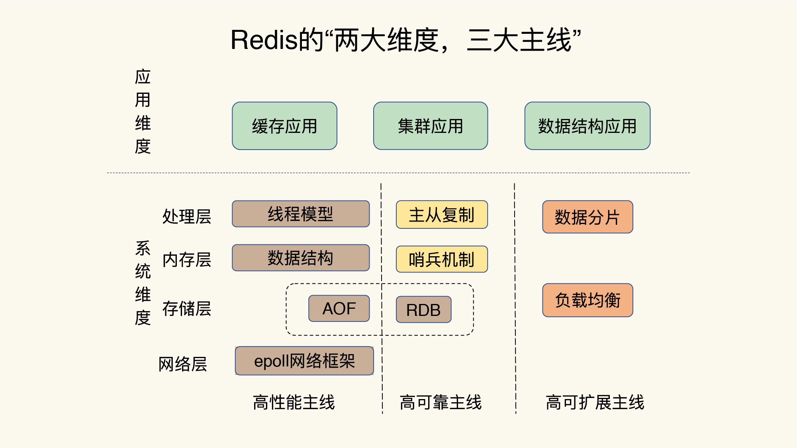
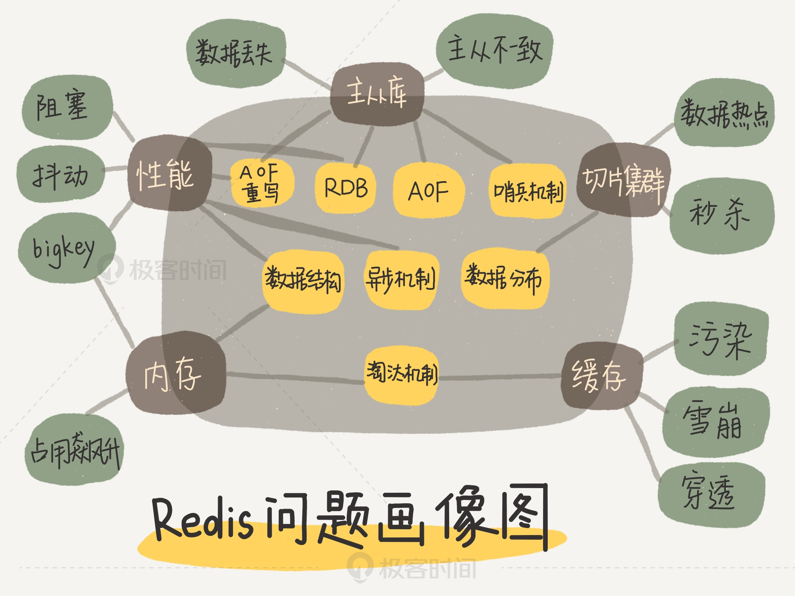

Redis 是一个开源的基于内存的数据存储结构，可以用作DataBase，Cache，Message Broker；Redis 提供数据结构有 string, hash, list, set, zset, bitmaps, hyperloglogs, geospatial indexe, streams ； Redis 具有内置的复制，Lua脚本，LRU逐出，事务和不同级别的磁盘持久性，并通过Redis Sentinel和Redis Cluster自动分区提供高可用性；可以在数据结构上进行部分原子操作，如追加字符串，hash中递增值,set进行交集，并集，差集计算，在zset获取最高值；Redis 支持异步复制，快速的非阻塞同步，自动连接，在网络拆分中进行部分重新同步；以及事务、发布/订阅、Lua脚本、生存时间有限的键、LRU收回Key、自动故障转移。
Redis 特性
-
速度快 : 正常情况下，Redis执行命令非常快，官方给出的数据是读写性能可以达到 10万/秒，当然这取决于具体的物理环境，但是除去物理环境的差异，Redis还是有速度快的原因
- Redis 的所有的数据都是放到内存中的
- Redis 是使用C语言实现，相对执行速度会快一些
- Redis 使用单线程架构，预防多线程可能引起的竞争问题
- Redis 代码的注重性能
-
基于键值对的数据结构服务器 : Redis 中的值可以是字符串、哈希、链表、集合，有序集合以及位图，HyperLogLog，还有3.2 之后加入的GEO
-
丰富的功能 : 提供键值过期服务、提供发布订阅功能，支持Lua脚本，提供简单的事务、提供流水线
-
简单稳定 : 简单体现在源码少，使用单线程，不需要依赖操作系统的类库
-
客户端语言多
-
持久化 : Redis 提供了两种持久化方式RDB和AOF，可以通过两种策略将内存中的数据存到磁盘中
-
主从复制 : Redis 提供复制功能，实现多个Redis数据副本，是事项分布式的基础
-
高可用和分布式 : Redis 2.8版本 提供了高可用Redis Sentinel，保证节点故障转移和发现，Redis 3.0 提供了Redis Cluster 实现真正的分布式，提供高可用、读写和容量扩展
Redis 使用场景
- 缓存
- 排行榜系统
- 计算器应用
- 社交网络
- 消息队列
Redis 全景图景
两大维度，三大主线：两大维度值系统维度和应用维度；三大主线：高性能、高可用、高扩展

- 高性能主线 : 包括线程模型、数据结构、持久化、网络框架
- 高可靠主线 : 包括主从复制、哨兵机制
- 高可扩展主线 : 包括数据分片、负载均衡
Redis 问题画像
